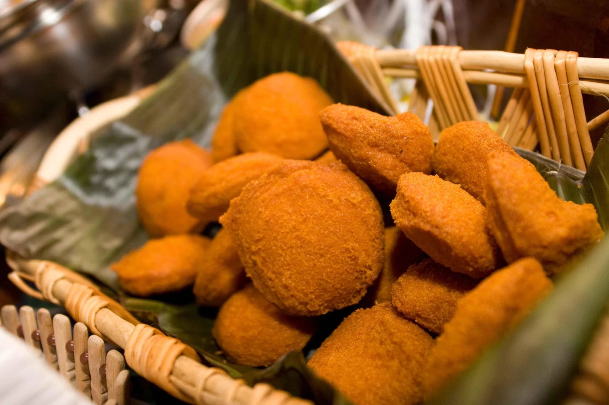
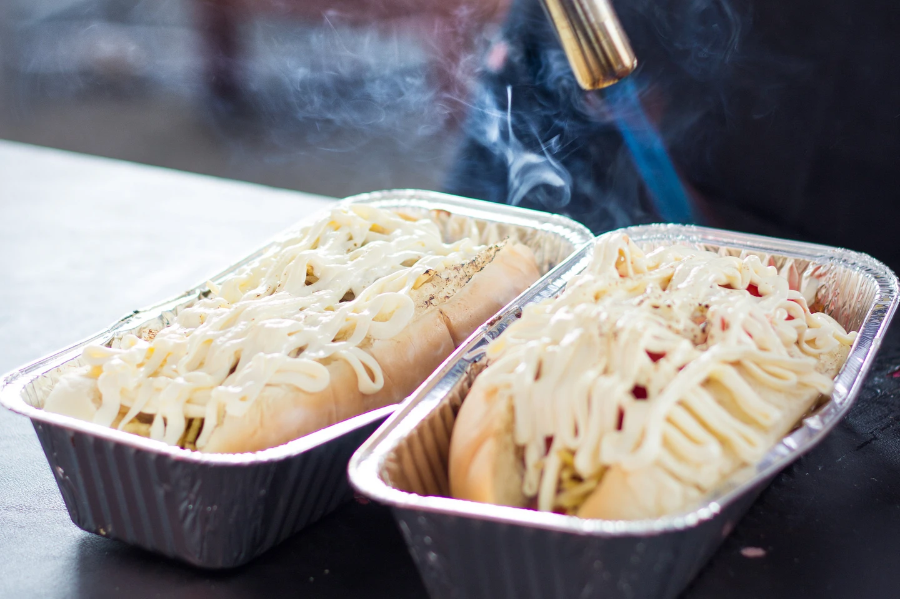
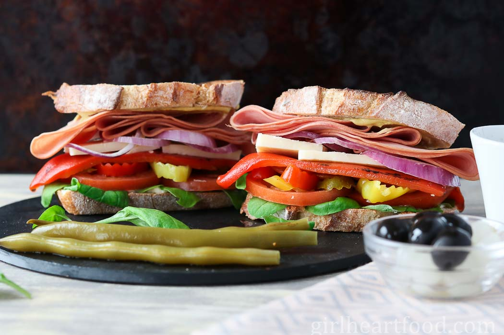
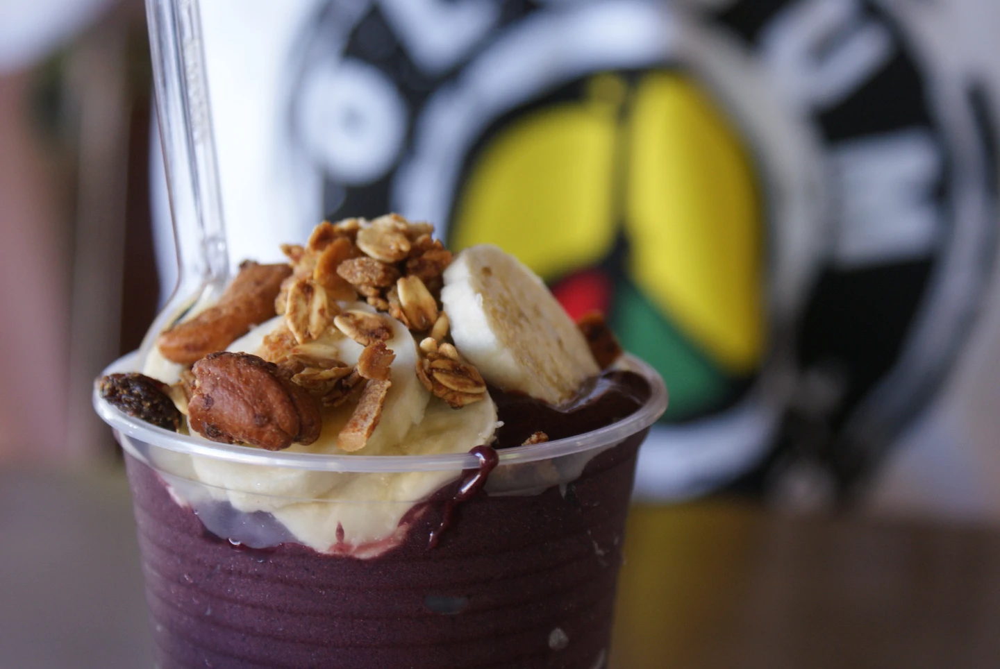
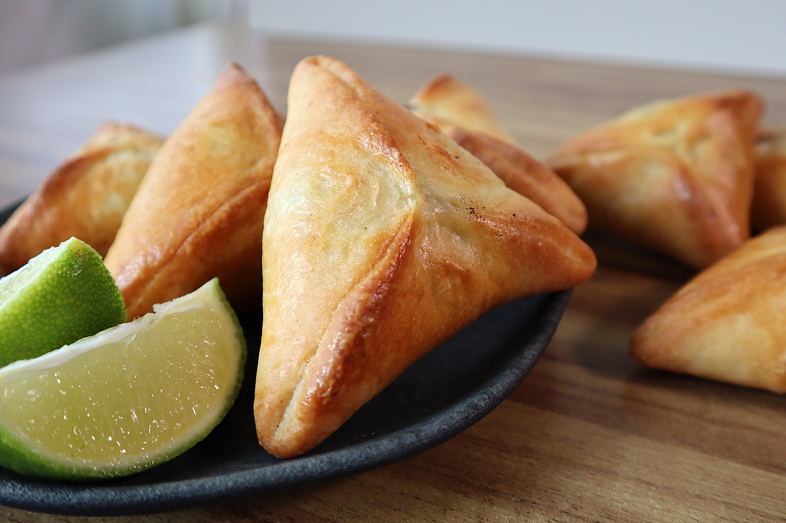
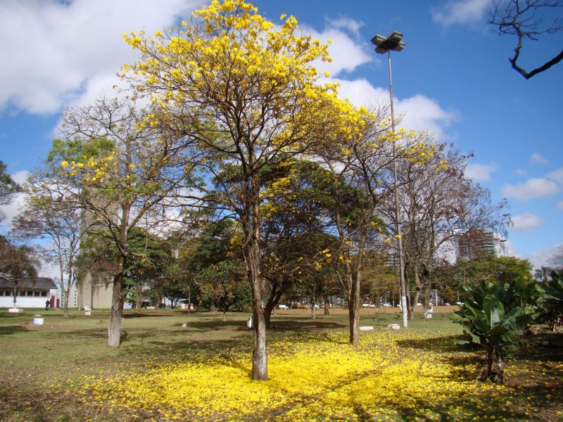
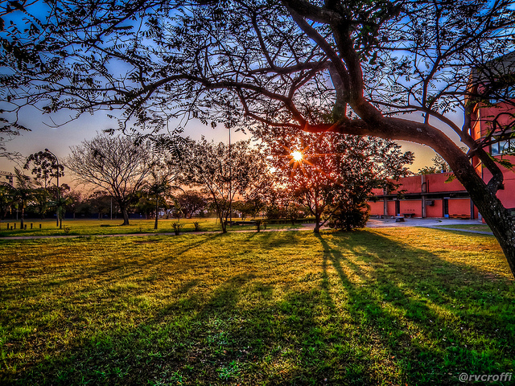

| HOW TO GET THERE |
|
| By Plane: |
Most international airlines fly through São Paulo.There are two main airports. International flights arrive at Guarulhos Airport 30km northeast of the city.Congonhas Airport, São Paulo's domestic airport, is within the city limits south of Centro. It is used by seven national airlines for their domestic flights. |
| By Bus: |
São Paulo has three bus terminals. All are connected to the Metrô system.Barra Funda, near the Barra Funda Metrô, serves buses to the interior of São Paulo, northern Paraná, Mato Grosso, and Minas Gerais. Jabaquara, next to the Jabaquara Metrô, provides transportation to Santos and the south coast. The Rodoviaria Tietê, for buses to Rio, is by far the largest and most important bus station, located on the Tietê Metrô stop. |
Featured Hotels In São Paulo
Grand Hyatt São Paulo
Ez Aclimação Hotel
Bourbon São Paulo Ibirapuera Convention Hotel
Meliá Paulista
Radisson São Paulo Paulista
Facts you probably didn’t know about São Paulo
São Paulo is home to 18 million people and is the third largest city in the world. The city has more cars than Rio de Janeiro has people.
In 1958, a rhinoceros was a candidate in São Paulo’s city council elections. It did not win!
Brazil consumes 1.6 million pizzas every day, of these, approximately 1million are eaten in São Paulo.
More people of Japanese descent live in São Paulo than in any other city outside of Japan.
The 558-foot Mirante do Vale building near Vale do Anhangabau is the country's tallest skyscraper. The Torre Sigma, currently under construction in the southern part of the city, is expected to eclipse the Mirante's height.
6 Can't-Miss Foods in São Paulo

Acarajé
Made with black-eyed peas and fried in palm oil the acarajé is then opened and stuffed with seafood or chicken.

Hot Dog
The hot dogs served in São Paulo are no ordinary dogs.–With mayo, cheese, and other assorted condiments.

Mortadella Sandwich
Warm or cold, with cheese or with vinaigrette, or even by itself the Mortadella (Bologna) sandwich is a must.

Açai
The tiny, deep purple fruit from the Northern region of Brazil,made with fuit blended with banana and guarana syrup.
Tapioca
A tiny disk made of manioc flour pressed together can be stuffed with either savoury fillings such as ham, eggs and cheese.

Esfiha
The esfiha, a breaded pastry, is a relatively simple food to make, cheap and stuffed with a variety of fillings.
Seasonal Highlights
|
|
|
|
|
| Spring
Sao Paulo begins to heat up with temperatures climbing to the mid-70s, and city residents head to the nearby beaches of Santos, Praia Grande, and Ilhabella.
The weather is generally sunny and pleasant and daylight hours increase throughout the season. |

| Summer
Sao Paulo itself heats up to the high 70s, and the humidity increases to 80 percent. Rains are more of a concern than the wet heat, as summer is the rainiest season. Flash downpours can occur, flooding roads and causing epic traffic jams. |
| 
| Autumn
Days stay sunny and nights begin to get cooler. Daylight hours begin to decrease steadily each month, but there’s still plenty of sunshine to enjoy outdoor activities like the annual Virada Cultural, the world’s largest 24-hour festival showcasing music, film, and other art forms held in May. |
| Winter
Winters are mild, and though the temperature can dip into the low 50s Fahrenheit, the city still experiences days with highs in the low 70s.
The cold days can feel surprisingly cool indoors, as many of the city’s buildings don’t have heating. |
As Sao Paulo is located in the Southern Hemisphere, seasons are opposite of the Northern Hemisphere’s, meaning summer begins in December and stretches through February. Those wanting to avoid the rain should come during the driest (though still rainy) time of the year from April to September. However, for those planning on going to the nearby beaches, summer will be best, when temperatures are highest.